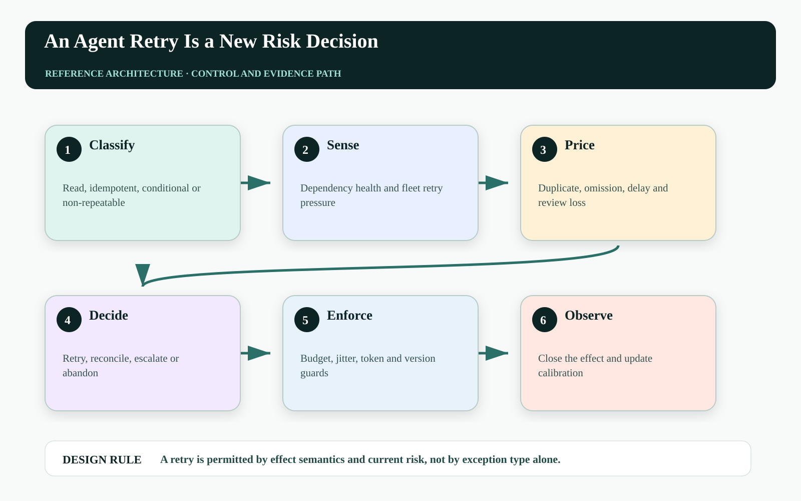
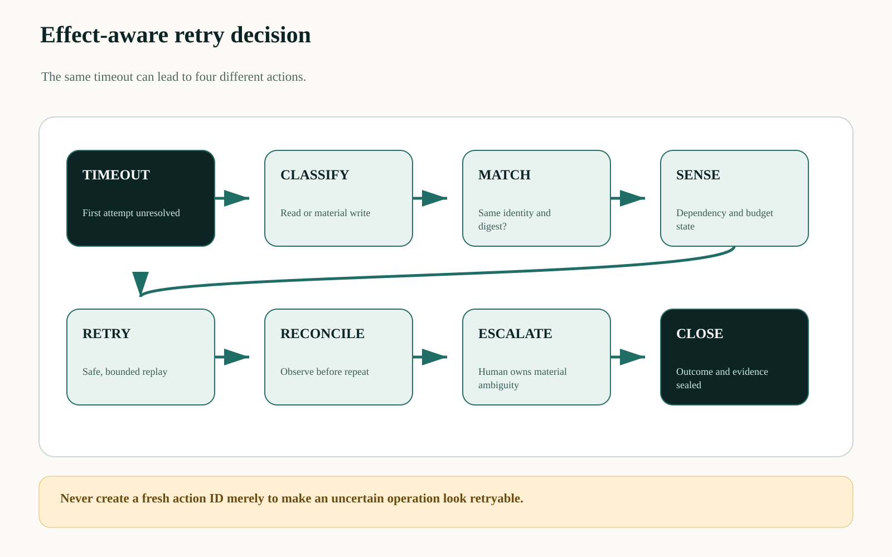
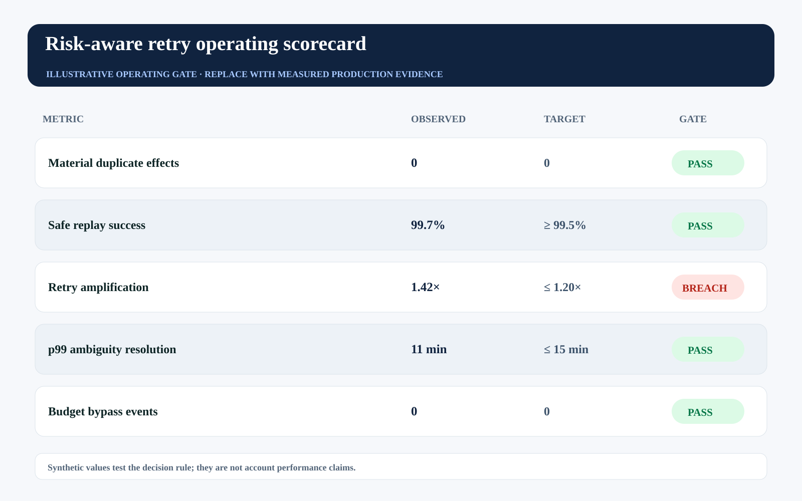

This is an editorial draft developed with AI writing and visualization assistance for human technical review before Medium publication. All incidents, thresholds, workloads, and operating values are illustrative unless a source is explicitly cited.
Retries look like resilience because most retry libraries count calls, not consequences. For a read, another attempt may be cheap. For a quote change, refund, outreach message, or access grant, another attempt can be a second decision with a second loss distribution.
An agent therefore should not inherit a generic SDK retry policy at the moment it crosses an effect boundary. The retry controller must know the action semantics, whether the first result is ambiguous, what duplicate and omission would cost, and how much traffic amplification the dependency can absorb.
Backoff protects infrastructure. A risk-aware retry policy protects the business effect.

Automatic retry hides two independent hazards#
The first hazard is semantic duplication: the remote system committed but the acknowledgement disappeared. The second is load amplification: correlated agents retry a degraded dependency, increasing contention and extending the outage. Jitter reduces synchronization, but it does not prove whether a material action is safe to repeat.
The controller must separate transport retry from business retry. It may repeat a safe read after backoff. It may replay an idempotent command with the same key and immutable digest. It must reconcile an ambiguous non-idempotent effect or ask an accountable operator before producing a new command.
Route retries through an effect-aware controller#
The controller classifies each tool contract as safe read, idempotent write, conditionally idempotent write, or non-repeatable effect. It joins dependency health, action exposure, attempt history, action identity, resource version, and remaining deadline into one decision.
A global retry budget caps additional calls across the fleet; a per-action ambiguity budget caps how long the system may remain uncertain. Circuit breakers and load shedding protect the dependency. An effect observer and idempotency ledger protect business state.

Use a retry utility, not a retry count#
For attempt k, retry only when expected incremental utility is positive and hard gates pass:
U_retry(k) = P_transient(k) × V_recovery
- P_duplicate(k) × L_duplicate
- C_delay(k) - C_load(k) - C_review_avoided(k)
retry iff U_retry(k) > 0 ∧ fleet_budget > 0 ∧ semantic_gate = allowThe decision changes after every attempt. Dependency health, deadline slack, and ambiguity evidence move. A fixed three-retry policy assumes the third call has the same value and risk as the first; consequential workflows rarely satisfy that assumption.
| Effect class | Default response to timeout | Required evidence |
|---|---|---|
| Safe read | Backoff + jitter | Dependency health and deadline |
| Idempotent write | Replay same key | Same payload digest |
| Conditional write | Observe version, then decide | Resource state and precondition |
| Non-repeatable | Reconcile or escalate | Authoritative effect observation |
Declare retry semantics in the tool contract#
The orchestration layer should consume machine-readable semantics rather than reverse-engineering endpoint names:
operation: issue_credit
effect_class: conditional_write
idempotency:
key: action_id
immutable_fields: [account_id, amount, currency]
ambiguity:
observe: GET /credits/by-action/{action_id}
deadline_seconds: 180
retry:
max_attempts: 2
requires_same_resource_version: true
global_budget_pool: billing-material-writesThe declaration belongs under version control and must be tested against the actual provider behavior. A nominal idempotency field is insufficient if its retention window is shorter than replay, or if downstream side effects are not deduplicated.
Measure amplification and unresolved consequence#
Track retry amplification as total attempts divided by original actions, segmented by dependency and effect class. Pair it with ambiguous material value, duplicate effects, omission loss, and p99 resolution time. A low error rate can coexist with an expensive unresolved tail.
In the synthetic gate, the global amplification ratio breaches while safe replay and duplicate-effect measures pass. That is an infrastructure warning before it becomes a business incident.

| Operating signal | Decision use | Failure interpretation |
|---|---|---|
| Retry amplification | Open or tighten fleet circuit | Retries are worsening dependency pressure |
| Ambiguous value at risk | Prioritize reconciliation by consequence | Unknown business effects are accumulating |
| Same-key mismatch | Reject and investigate caller | A changed intent is masquerading as retry |
| Resolution latency | Tune observation and escalation | Recovery capacity is insufficient |
Failure-injection before production#
A design review cannot prove A retry is permitted by effect semantics and current risk, not by exception type alone. The pre-production harness must interrupt the system at the transitions where ownership, authority, evidence, and business state can disagree. The objective is not to maximize a generic pass rate. It is to demonstrate that every material fault produces a bounded state, a named owner, and an admissible recovery transition.
| Injected fault | Experiment | Required evidence |
|---|---|---|
| Delayed or reordered work | Pause the path after CLASSIFY and release it after RETRY | The stale path cannot manufacture terminal success |
| Authority becomes stale | Advance policy, mode, ownership, or resource version before effect commit | The final gateway rejects the old decision context |
| Evidence is missing or corrupted | Remove one authoritative observation or change its digest | The outcome remains violated, inconclusive, or owned—never guessed |
| Recovery itself fails | Interrupt compensation, handoff, or receipt closure | The action stays visible with an owner, deadline, and next legal transition |
Run the matrix at concurrency, with realistic dependency lag and with the same policy and gateway versions used in the candidate release. Report p95 and p99 resolution alongside the worst unresolved example. Averages can demonstrate throughput; they cannot erase a single material breach. Promotion should require replayable evidence for the controls, not a slide stating that the team considered the risk.
Three questions for the architecture review#
Where is truth decided? Name the authoritative source and the exact component permitted to advance the workflow into a terminal state. If the answer is ‘the agent interprets the tool response,’ the boundary is not yet independent.
Where is authority finally enforced? Follow the command through every queue, adapter, cache, provider, and downstream effect. A policy decision is useful only when the last material write boundary can reject a stale, changed, or excessive action.
What blocks promotion? Convert the scorecard into executable gates with owners and expiry. A breached tail metric must reduce scope, hold the cohort, or enter an approved exception path; it cannot remain decorative telemetry.
A practical implementation sequence#
1. Inventory tool semantics. Classify every mutating integration and document whether idempotency is end-to-end or only local.
2. Centralize retry budgets. Prevent fifty agent workers from each believing they are below an individual limit.
3. Inject ambiguous outcomes. Commit the server effect, drop the response, and prove the controller observes before deciding.
Primary references and boundaries#
AWS's idempotent API guidance distinguishes repeated requests from changed intent. Exponential Backoff and Jitter addresses correlated retry contention. RFC 9110 defines idempotent HTTP method semantics.
The formula is a decision framework, not a universal probability model. Loss values and transient-failure estimates must be calibrated by domain and tested under dependency-specific fault modes.
The operating conclusion#
A retry policy becomes production-grade when it can explain why this action, with this immutable intent, against this observed state, deserves another attempt now. Everything else is a loop with good intentions.
Which of your agent tools inherits retries from an SDK even though the endpoint creates a material effect?